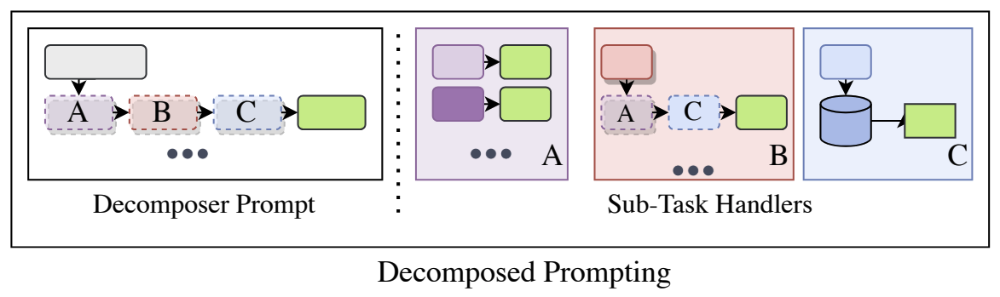
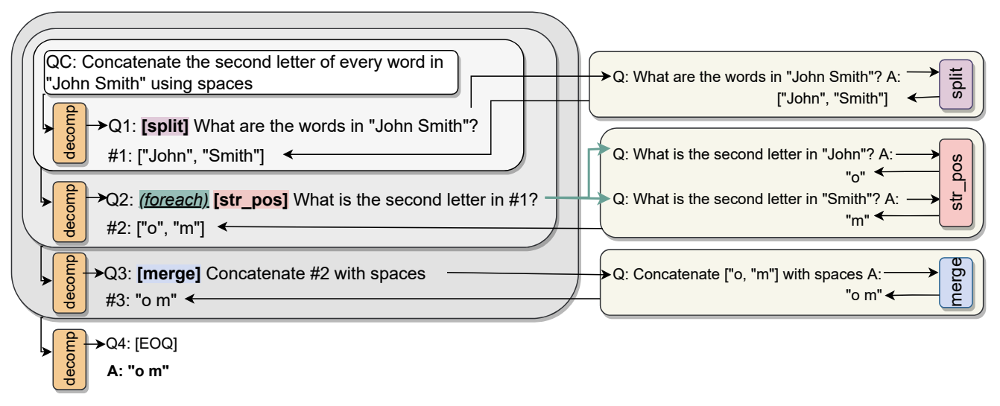
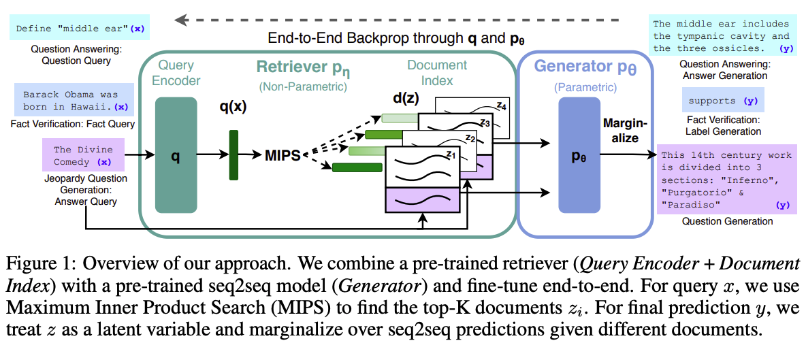

应用¶
LLM 应用广泛，但不同的应用类型之间并没有明显的界限。这里选取一些主题进行讨论。
聊天机器人¶
用结构化的模板引导 LLM 生成与用户聊天的内容。例如下面展示了传入 Llama-2-7b-chat-hf 模型的 token 序列：
>>> from transformers import AutoTokenizer
>>> tokenizer = AutoTokenizer.from_pretrained("meta-llama/Llama-2-7b-chat-hf")
>>> tokenizer.use_default_system_prompt = False
>>> conversation = [
{"role": "system", "content": "You are a helpful assistant."}
{"role": "user", "content": "Hello, how are you?"},
{"role": "assistant", "content": "I'm doing great. How can I help you today?"},
{"role": "user", "content": "I'd like to show off how chat templating works!"},
]
>>> tokenizer.apply_chat_template(conversation, tokenize=False)
"<s>[INST] <<SYS>>\nYou are a helpful assistant.\n<</SYS>>\n\nHello, how are you? [/INST] I'm doing great. How can I help you today? </s><s>[INST] I'd like to show off how chat templating works! [/INST]"
>>> tokenizer.apply_chat_template(conversation, return_tensors="pt")
tensor([[ 1, 518, 25580, 29962, 3532, 14816, 29903, 6778, 13, 3492,
526, 263, 8444, 20255, 29889, 13, 29966, 829, 14816, 29903,
6778, 13, 13, 10994, 29892, 920, 526, 366, 29973, 518,
29914, 25580, 29962, 306, 29915, 29885, 2599, 2107, 29889, 1128,
508, 306, 1371, 366, 9826, 29973, 29871, 2, 1, 518,
25580, 29962, 306, 29915, 29881, 763, 304, 1510, 1283, 920,
13563, 1350, 572, 1218, 1736, 29991, 518, 29914, 25580, 29962]])
# 其中：
# * INST 指 instruction，[INST] 和 [/INST] 标签包裹用户消息
# * <s> 和 </s> 标签包裹用户和 LLM 的一个聊天回合
# * <<SYS>> 和 <</SYS>> 标签包裹系统消息，放在第一个用户消息前，[INST] 标签内
# * 只有 <s> 和 </s> 是特殊 token
通过 RLHF 微调使 LLM 对齐。可以在返回输出前增加事实核查、有害词汇检测和处理、偏见检测和处理等步骤。
典型应用：
- ChatGPT
- Claude
- Gemini
- ……（不计其数）
提示工程¶
参考
在与 LLM 聊天（使用 LLM 生成文本）时，输入的格式和内容是自由的，而输入会影响 LLM 的行为（输出的分布）。精心或巧妙构建出的提示词（prompt）可以让 LLM 更加贴合用户的需求，提升特定能力，或处理特定形式的任务等。
提示工程是 LLM 领域的一个新兴的子学科。一些人认为提示工程最终会消失；我认为提示工程本身作为优化模型表现的方法总会存在：输入不同，输出的分布必然不同，若对其计算量化指标，则必然有高有低，总会有优化的空间。与此同时，模型本身的能力、应用/系统的工作流也会影响模型表现，应结合实际需求，综合考虑不同部分的优化难度、优化效果（这些仍在发展中）选择方案。
但不应让用户自己来做提示工程，这会损害使用体验，自然的提示词（类似人与人的交流）一定是体验最好的。
下面是一些 prompting 技术：
| 方法 | 概述 | 细节 | 备注 | 论文 |
|---|---|---|---|---|
| zero-shot | 仅给出指令 | 作为基线 | ||
| few-shot | 提供一些范例 |
|
又称为 ICL（In-Context Learning） | 2005.14165（GPT-3 的论文） |
| generate knowledge prompting | LLM 先生成与问题相关的知识，再参考其进行回复 | 2110.08387 | ||
| Chain-of-Thought（CoT） | LLM 给出思维过程 |
|
2201.11903 | |
| self-consistency | 采样多个答案（CoT），行多数决 | 方法通用 | 可以让 LLM 计数 | 2203.11171 |
| max mutual information | 生成具有不同风格（或提供不同范例）的多个 prompt 模板，选取最优模板，即最大化 prompt 和 LLM 输出的互信息的模板 | 2203.11364 | ||
| least-to-most prompting | LLM 先分解问题为几个子问题，再顺序解答，已解答的子问题 Q&A 会被附加到 prompt 中 | 与 CoT 存在相似之处 | 2205.10625 | |
| RLPrompt | （基于强化学习的方法） | 2205.12548 | ||
| complexity-based prompting | 基于 few-shot CoT；选取复杂（步数多）的范例；采样 n 个答案，其中最复杂的 k 个答案行多数决 | 2210.00720 | ||
| DECOMP（Decomposed Prompting） | 一个 decomposer 负责分解任务为几个（预定义的）子任务，几个 sub-task handler 负责处理相应的子任务，它们各自有专属的 few-shot prompt，另见图 1 和图 2 | 2210.02406 | ||
| Re3 | 生成长篇故事 | 2210.06774 | ||
| Auto-CoT | 聚类选取具有代表性的几个问题，LLM 生成 CoT（zero-shot）并作为新的范例 | 2210.03493 | ||
| Automatic Prompt Engineer（APE） | LLM 根据范例生成多个 prompt，评估选取得分最高的；（可选）LLM 为得分最高的 prompt 生成多个变体，继续评估选取得分最高的 | 方法通用 | 2211.01910 | |
| Program-of-Thoughts | LLM（e.g. Codex、CodeLlama）生成代码作为推理步骤，代码解释器执行这些步骤得到最终答案 | 在数学和编程相关的任务中效果出色，但在语义推理任务中效果较差 | 2211.12588 | |
| active prompting | 从问题集中选取 LLM 多次回复（CoT）最不一致的几个问题，人类标注 CoT 并作为新的范例 | 2302.12246, 2305.08291 | ||
| Self-Refine | LLM 迭代地为它的答案提供反馈并据此改进 | 方法通用 | 2303.17651 | |
| ProTeGi | LLM 先根据 prompt 和失败示例生成改进意见，再根据 prompt、失败示例和改进意见生成多个新的 prompt，最后使用 bandit 算法选择一个 | 2305.03495 | ||
| Tree-of-Thought（ToT） | 将思维链扩展为思维树，LLM 每一步先生成几个中间想法（few-shot），再自我评估（打分、投票等）选取朝向解决问题最有进展的想法（few-shot CoT）以继续；可以使用深度或广度优先的搜索策略 | 对需要计划和搜索的任务尤其有效 | 2305.10601 | |
| emotion prompting | 对 LLM 进行情绪勒索 | 2307.11760 | ||
| Cumulative Reasoning（CR） | LLM 扮演三种角色合作推理（all with CoT）：proposer 基于当前上下文提出下一步的方案；verifier 评估方案，接受有效的方案并加入到上下文；reporter 选择适当的时机结束推理过程 | 2308.04371 | ||
| Graph-of-Thought（GoT） | 将思维树扩展为思维图，类似一个工作流 | 2308.09687 | ||
| Chain-of-Verification（CoVe） |
|
适用于问答任务 | 2309.11495 | |
| role prompting | LLM 进行角色扮演 | 2310.00746 | ||
| System 2 Attention（S2A） | LLM 先改写 prompt 以移除与问题本身不相关的信息，再根据新的 prompt 生成回复 | 2311.11829 | ||
| Buffer of Thoughts（BoT） | 2406.04271 |


注意
prompting 方法对于更新、更强的 LLM 可能会失效。
下面是一些 prompting 小窍门：
- 对 LLM 礼貌没用，但说无妨。
- 尽量使用肯定的指示（“做什么”）而不是否定的指示（“不要做什么”）。
- 对 LLM 说“我会为一个更好的答案付x元小费”是有用的。
- 对 LLM 说“（如果你不能完成任务）你将会受到惩罚”是有用的。
提示攻击（prompt hacking）是提示工程的一种恶意利用，其通过巧妙的提示词诱导 LLM 产生有害或不希望的输出（例如变更任务、突破限制、泄露机密或隐私信息等）。越狱（jailbreaking）和提示注入（prompt injection）都属于提示攻击，辨析如下：
| 越狱 | 提示注入 | |
|---|---|---|
| 攻击对象 | LLM 本身 | 基于 LLM 的应用 |
| 攻击结果 | LLM 产生有害或未对齐的输出 | LLM 玩忽职守，在不恰当的时机做不恰当的事情 |
| 类比到人类 | 违法犯罪 | 在上课时间突然唱歌 |
RAG¶
RAG（retrieval-augmented generation）这一概念由 2005.11401 提出，其为预训练的参数化记忆生成模型（预训练 transformer）赋予了非参数化记忆（向量索引），并将其用在知识密集型的任务上。具体方法如下：

该方法本来是一个微调方法，对组合架构进行端到端的训练。亦即，使用成对的 QA 数据，最小化 \(\sum_i -\log p(y_i|x_i)\)，来同时微调生成回复的 LM（BART）和编码查询文本的 LM（BERT）（若要微调编码文档的 LM（BERT），则需要定期重新编码文档，开销较大，原论文发现其对于模型表现提升不大，于是固定其参数）。
对于外挂知识库的优点，原论文提到：可以直接扩展或修改（位于向量索引的）知识；可以对被检索到的知识作进一步的检查，减少 LLM 的幻觉。
如今的知识库问答应用都是基于这一方法，但不进行训练，只进行推理。典型应用：
检索方法¶
- 向量检索

向量检索
- 向量检索+重排

重排
- 全文检索+重排

全文检索
- 混合检索+重排

- 多知识库混合检索+二次重排

GraphRAG¶
智能体¶
对于智能体（agent）的定义，就和对于通用人工智能（AGI）的定义一样莫衷一是。综合现有的观点，智能体应能够：
- 通过某种方式与环境互动（包括输入和输出）
- 具有记忆、推理、规划、应变、反思等能力
- 独立地（不需要人为干预）完成一项现实世界的任务
- 完成多步任务
- 使用工具
- 主动地（预判用户的需求）完成任务
LLM 凭借其推理、指令遵循、上下文学习和工具使用等多项能力，成为当前智能体开发的首选引擎。基于 LLM 的智能体是 LLM 的一项综合应用，围绕 LLM 的各种技术都会被使用到。
2210.03629 提出的 ReAct 是一种具有里程碑意义的智能体范式，其协同 LLM 的推理和行动（包括决策和工具使用），以解决通用的任务。具体地：
- LLM 交替生成推理和行动
- 推理帮助 LLM 跟踪进度，分析当前情况，调整行动计划，处理异常等；行动使 LLM 与外部源交互并获取更多的信息（反馈）
- 提高人类可解释性和可信任性
- 克服幻觉和错误传播问题
- 有较好的泛化性和健壮性
2303.11366 提出的 Reflexion
多智能体讨论/对话¶
下面是用于构建基于 LLM 智能体的应用的框架：
- CAMEL（使用提示词引导智能体进行角色扮演，从而促进智能体之间的合作，形成一个团队）[2303.17760]
- multi-agent debate（多智能体讨论提升数学和策略能力，减少错误信息和幻觉，并且参与的智能体越多，讨论的回合数越多（会逐渐收敛），得到的结果越好）[2305.14325]
- multi-agent debate（多智能体讨论相比自我反省更能鼓励多样性思考）[2305.19118]
- MetaGPT（基于多智能体对话的软件开发团队）[2308.00352]
- AutoGen（基于多智能体对话的 LLM 应用框架）[2308.08155]
- Dynamic LLM-Agent Network（考核智能体的表现，开除表现较差的智能体，从而优化团队）[2310.02170]
- Exchange-of-Thought（不同任务适合不同的讨论模式）[2312.01823]
- Swarm（符合人体工学的、轻量级的、多智能体编排框架）[openai/swarm]
Swarm¶
运行 Swarm
client.run() 实现如下流程：
- 从当前代理的属性获取模型、指令（作为 system message）和函数（作为 tools），发送 chat completion 请求。
- 将响应的 message 添加到对话历史。如果 message 包含 content，返回最终的 Response；如果 message 包含 tool_calls，调用相应的函数，构造 message 并添加到对话历史，更新上下文变量。
- 如果对话历史的长度超过最大轮数，返回最终的 Response；否则回到 1.。
client.run() 的参数：
| 参数 | 类型 | 描述 | 默认值 |
|---|---|---|---|
| agent | Agent |
要调用的（初始）代理。 | （必填） |
| messages | List |
消息对象的列表，格式与 Chat Completions messages 相同。 |
（必填） |
| context_variables | dict |
一个包含额外上下文变量的字典，这些变量可供函数和代理指令使用。 | {} |
| max_turns | int |
允许的最大对话轮次。 | float("inf") |
| model_override | str |
一个可选的字符串，用于覆盖代理使用的模型。 | None |
| execute_tools | bool |
如果为 False，当代理尝试调用函数时，会中断执行并立即返回 tool_calls 消息。 |
True |
| stream | bool |
如果为 True，启用流式响应。 |
False |
| debug | bool |
如果为 True，启用调试日志记录。 |
False |
client.run() 返回一个 Response 对象，其包含最新的状态信息，可以被传递给下一个 client.run() 以继续交互。Response 的属性：
| 字段 | 类型 | 描述 |
|---|---|---|
| messages | List |
消息对象的列表，格式与 Chat Completions messages 类似，但增加了一个 sender 字段，指示该消息来自哪个代理。 |
| agent | Agent |
处理最后一条消息的代理。 |
| context_variables | dict |
最新的上下文变量。 |
代理
Agent 的属性：
| 属性 | 类型 | 描述 | 默认值 |
|---|---|---|---|
| name | str |
代理的名称。 | "Agent" |
| model | str |
代理使用的模型。 | "gpt-4o" |
| instructions | str 或 func() -> str |
代理的指令，可以是一个字符串或返回字符串的函数。 | "You are a helpful agent." |
| functions | List |
代理可以调用的函数列表。 | [] |
| tool_choice | str |
代理的工具选择（如果有的话）。 | None |
代理的说明：
- 当前代理的指令被设为聊天的系统信息。
函数
函数的说明：
- 函数应返回一个字符串、一个代理对象或一个
Result对象：- 如果返回一个字符串，则作为 tool message 的 content。
- 如果返回一个代理对象，则执行将转移给它。
- 如果返回一个
Result对象，则可选地返回一个字符串、返回一个代理对象以及更新上下文变量。
- 如果函数定义了
context_variables参数，则该参数将由传递给client.run()的context_variables参数的值填充。
Result 的属性：
| 字段 | 类型 | 描述 |
|---|---|---|
| value | str |
|
| agent | Agent |
执行被转移给的代理。 |
| context_variables | dict |
对于上下文变量的更新。 |
工具使用¶
下列工具可以提供给 LLM 使用：
- 计算器
- 程序运行环境
- 向量数据库、搜索引擎（RAG）
- 其他模型，例如图像/语音/视频生成模型
- 其他应用程序
下面是一些让 LLM 使用工具的实践：
- WebGPT（LLM 使用搜索引擎和浏览网页文本：环境将当前的完整状态提供给 LLM，LLM 生成一个命令以采取一项规定动作；训练方法是有监督微调和 RLHF）[2112.09332]
- Toolformer（LLM 自主调用 API；训练方法是有监督微调，训练数据由 LLM 自己根据 few-shot 生成，且过滤掉没有帮助的调用；推理时一旦产生特殊 token →，则停止生成并调用 API，附加结果和特殊 token
</API>后继续生成）[2302.04761] - AnyTool（多个 LLM 组成具有层次结构的 API retriever，从结构化的 API 组织中检索与查询最相关的 API）[2402.04253]
- MCP（Anthropic 发布的模型上下文协议）
开放式学习¶
- Voyager
迈向 OS¶
- MemGPT